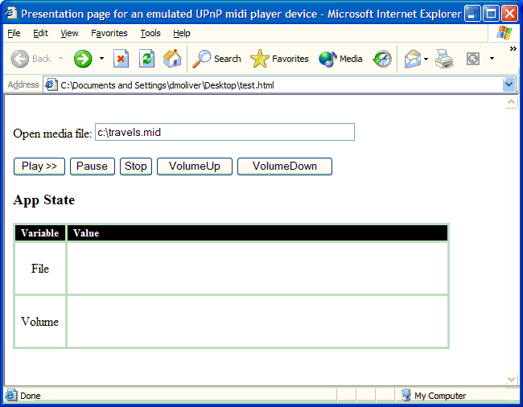

The sample code in this section uses the Control Point API with UPnP technology to create a simple Web page to control a fictitious UPnP-based media player devices. The Web page is shown in the following illustration.
[!Note]
This sample code only works for browsers running under Windows; it does not work in browsers running under other operating systems.
Â

<!DOCTYPE HTML PUBLIC "-//W3C//DTD HTML 4.0 Transitional//EN">
<HTML>
<HEAD>
<TITLE>Presentation page for an emulated UPnP midi player
device</TITLE>
</HEAD>
<BODY>
<BR>
<!--Set up the controls-->
Open media file: <INPUT type="TEXT" value="c:\travels.mid"
ID="FileName" NAME="FileName" SIZE="50,5" MAXLENGTH="250">
<BR>
<BR>
<INPUT type="button" ID="PlayButton" onclick="OnPlay()"
value="Play >>">
<INPUT type="button" ID="PauseButton" onclick="OnPause(this)"
value="Pause">
<INPUT type="button" ID="StopButton" onclick="OnStop()" value="Stop">
<INPUT type="button" ID="VolUpButton" onclick="OnVolumeUp()"
value="VolumeUp">
<INPUT type="button" ID="VolDownButton" onclick="OnVolumeDown()"
value="VolumeDown">
<H3>App State</H3>
<!--Set up the table that displays state information-->
<TABLE BGCOLOR='#D6D7DE' BORDER=0 VALIGN=top ALIGN=left CELLPADDING=1
CELLSPACING=3 height="157">
<TR>
<TD BGCOLOR='#000000' VALIGN=center ALIGN=center WIDTH=60
height="17"><B><FONT SIZE="2"
COLOR=whitesmoke>Variable</FONT></B></TD>
<TD VALIGN=middle ALIGN=left BGCOLOR='#000000' WIDTH=470
height="17"><B><FONT SIZE="2"
COLOR=whitesmoke> Value</FONT></B></TD>
</TR>
<TR>
<TD BGCOLOR="#FFFFFF" VALIGN=center ALIGN=center
height="59">File</TD>
<TD BGCOLOR="#FFFFFF" valign="top" height="59"> <P
ID=MyFile></P></TD>
</TR>
<TR>
<TD BGCOLOR="#FFFFFF" VALIGN=center ALIGN=center
height="59">Volume</TD>
<TD BGCOLOR="#FFFFFF" valign="top" height="59"> <P
ID=Volume></P></TD>
</TR>
</TABLE>
<SCRIPT language=VBScript>
<!--Initialize the set of services offered by the device, and other variables-->
Dim appService
Dim xportService
Dim Vol(1)
Dim args(0)
Dim File(1)
Dim bPlaying
Dim bPaused
Dim device
set appService=Nothing
set xportService=Nothing
bPlaying = False
bPaused = False
<!--Create the description document object-->
Dim descriptionDoc
Set descriptionDoc = CreateObject("UPnP.DescriptionDocument")
<!--Load the description doc for the device-->
descriptionDoc.Load("./description.xml")
device = descriptionDoc.RootDevice
<!--Connect to the device's DVDVideo and AVTTransport services-->
set xportService = device.Services("urn:upnp-org:serviceId:DVDVideo")
set appService = device.Services("urn:upnp-org:serviceId:AVTransport")
appService.AddCallback GetRef("eventHandler")
<!--initialize the volume-->
Dim outArgs (0)
Vol(0) = 3
appService.InvokeAction "SetVolume", Vol, outArgs
<!--Event handler for the appService-->
<!--Update the state table maintained locally-->
Sub eventHandler(callbackType, svcObj, varName, value)
If (callbackType = "VARIABLE_UPDATE") Then
select case svcObj.Id
case "upnp:id:mediaapp"
select case varName
Case "File" MyFile.innerText = value
FileName.value = value
Case "Volume" Volume.innerText = value
end select
end select
End If
End Sub
<!--Invoke the play action-->
function OnPlay ()
File(0) = FileName.value
Dim outArgs(0)
If File(0) = "" Then
alert("Please enter the path to the file to play!")
Else
appService.InvokeAction "Power", args, outArgs
appService.InvokeAction "LoadFile", File, outArgs
xportService.InvokeAction "Play", args, outArgs
bPlaying = True
End if
end function
<!--Invoke the Pause action-->
function OnPause (button)
Dim outArgs (0)
If bPlaying Then
xportService.InvokeAction "Pause", args, outArgs
bPaused = True
bPlaying = False
ElseIf bPaused Then
xportService.InvokeAction "Play", args, outArgs
bPaused = False
bPlaying = True
End if
If bPaused Then
button.value="Resume"
Else
button.value="Pause"
End if
end function
<!--Invoke the Stop action-->
function OnStop ()
Dim outArgs (0)
xportService.InvokeAction "Stop", args, outArgs
bPlaying = False
end function
<!--Invoke the VolumeUp action-->
function OnVolumeUp ()
Dim outArgs (0)
appService.InvokeAction "VolumeUp", args, outArgs
end function
<!--Invoke the VolumeDown action-->
function OnVolumeDown ()
Dim outArgs (0)
appService.InvokeAction "VolumeDown", args, outArgs
end function
</SCRIPT>
</BODY>
</HTML>
Â
Â